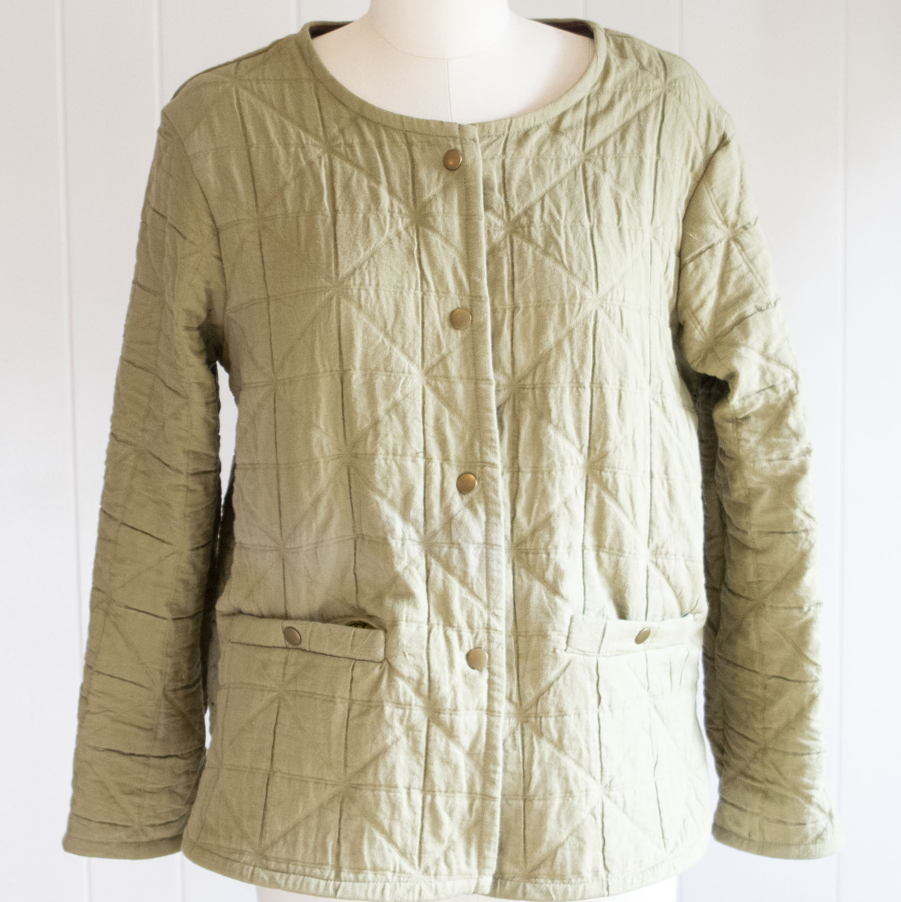
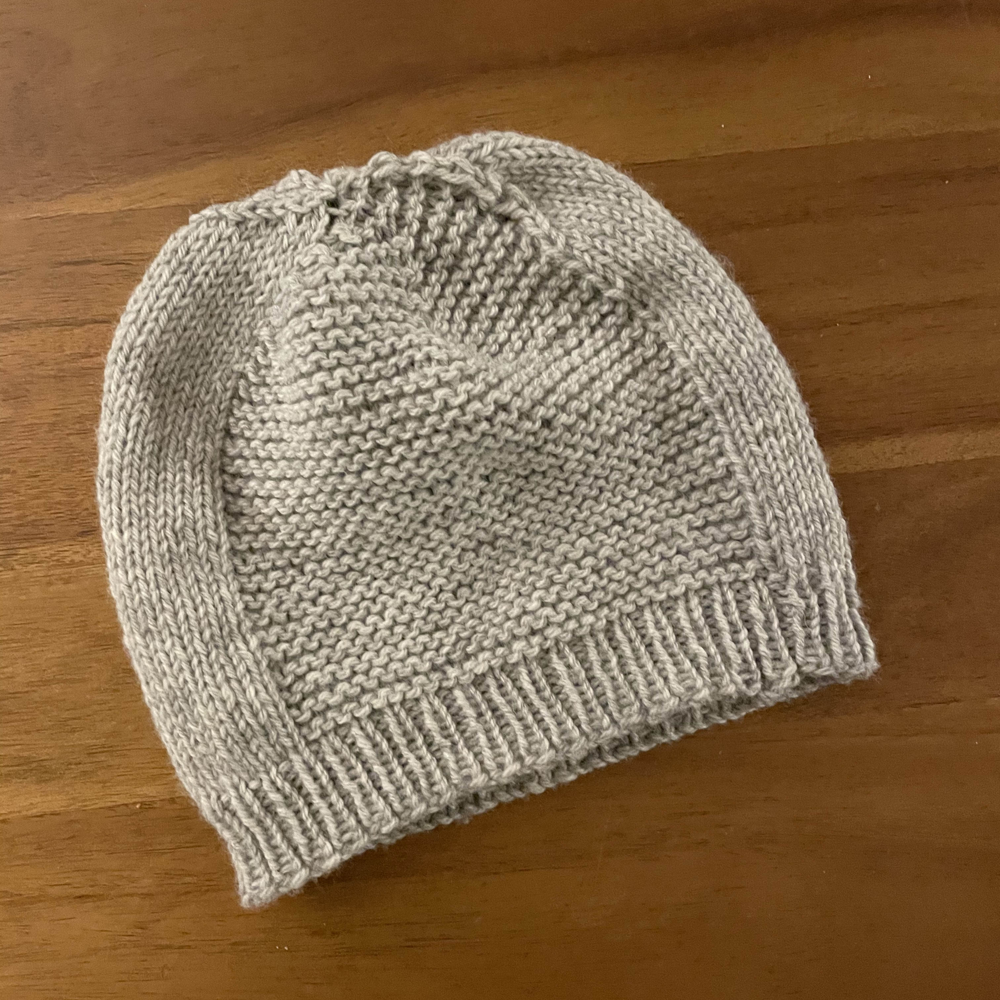
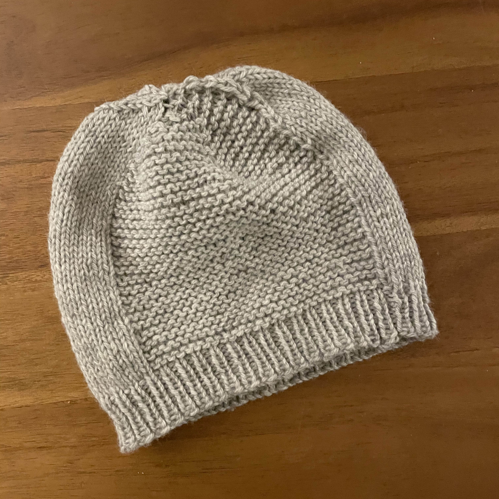
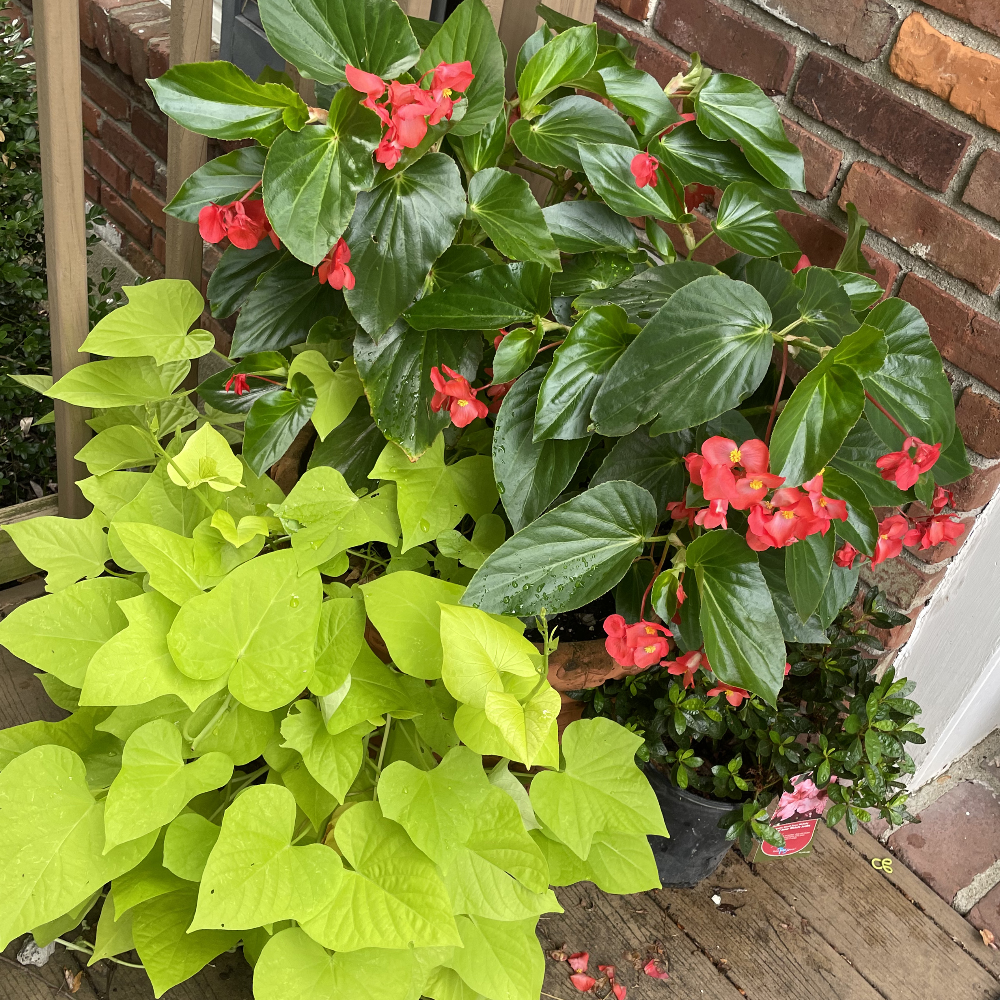
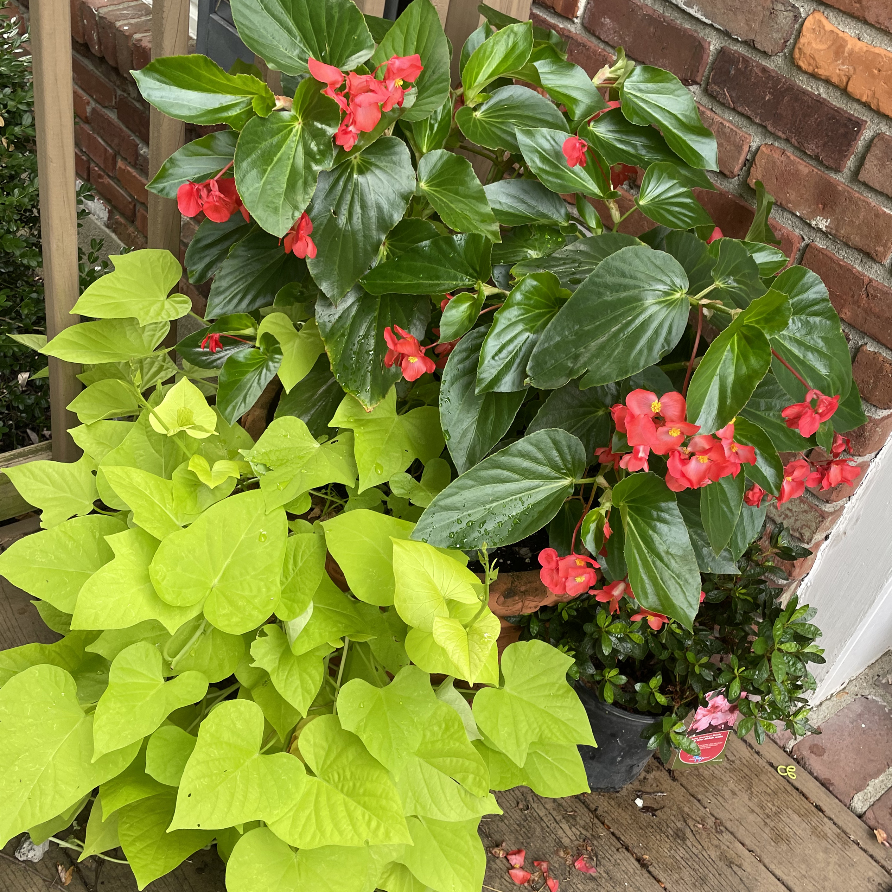
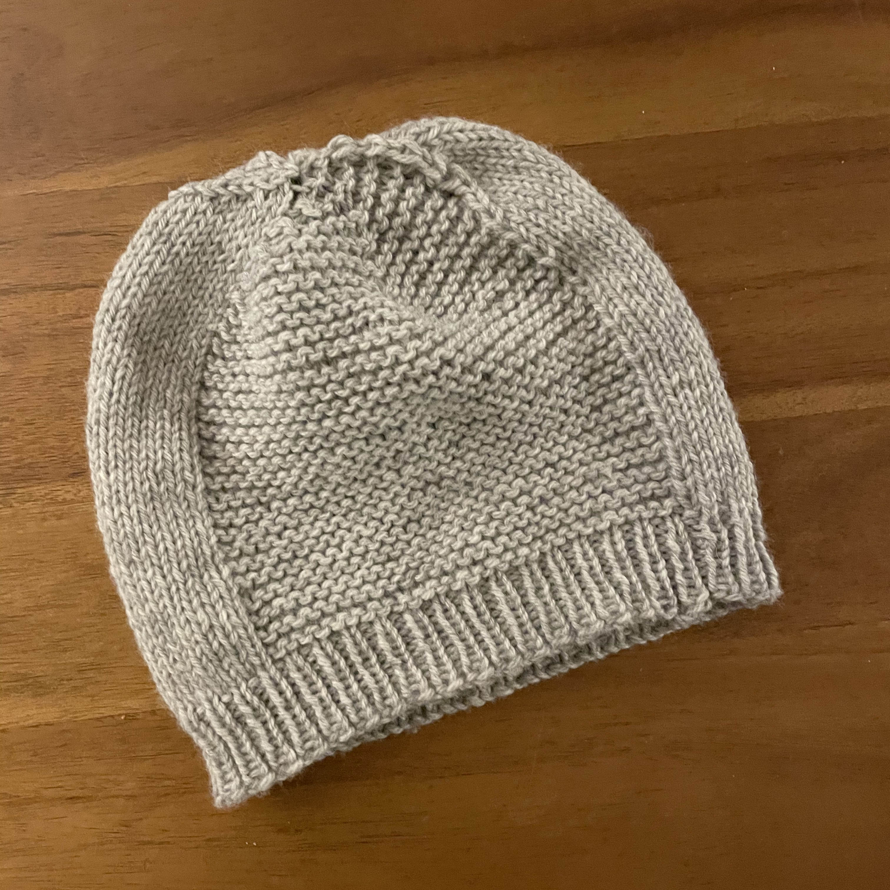
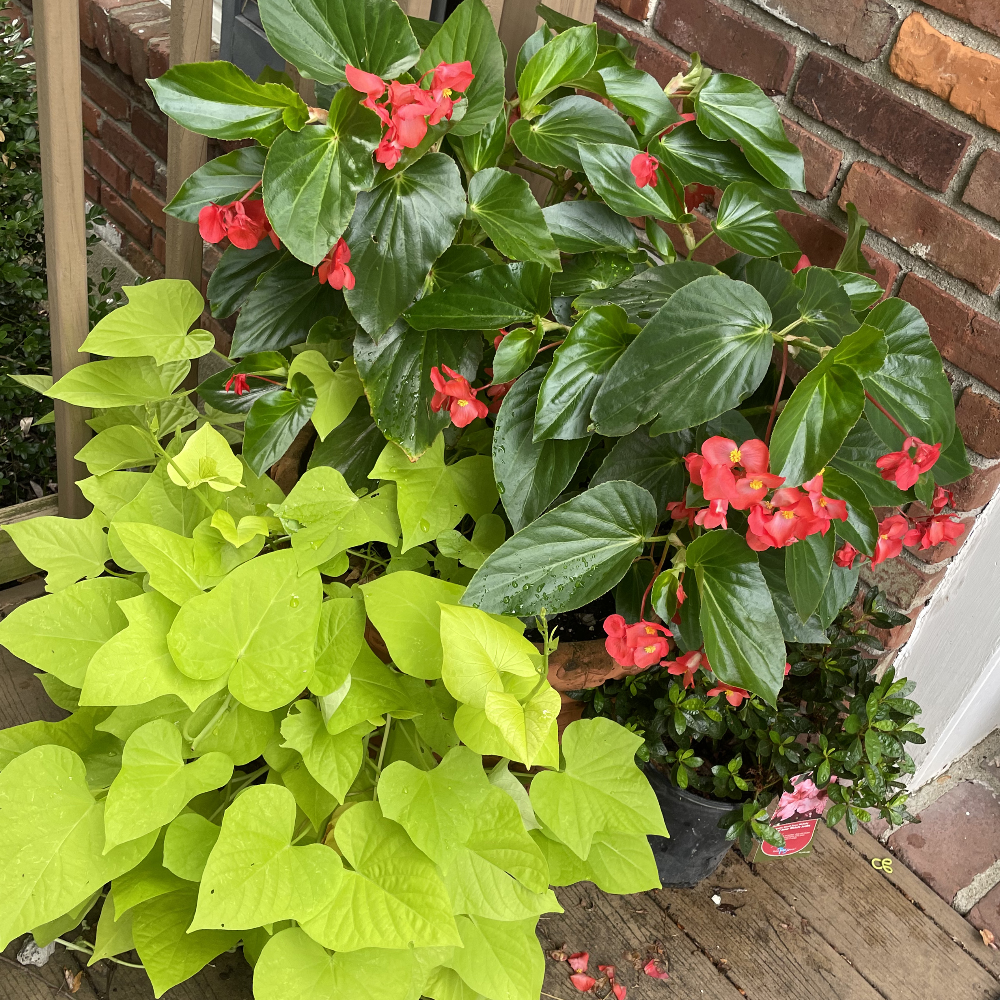

About
I’m a product designer, lifelong learner and constant creative looking for an environment where I can grow my creative practice. With over a decade of experience as a Visual Art teacher before transitioning to design, I am well-versed in the fundamentals of design. My background in education has provided me the opportunity to develop empathy and to hone the design process through designing curriculum.
I am always creating and love working with my hands. My other interests include sewing, knitting, embroidery, photography and gardening.

 


 


